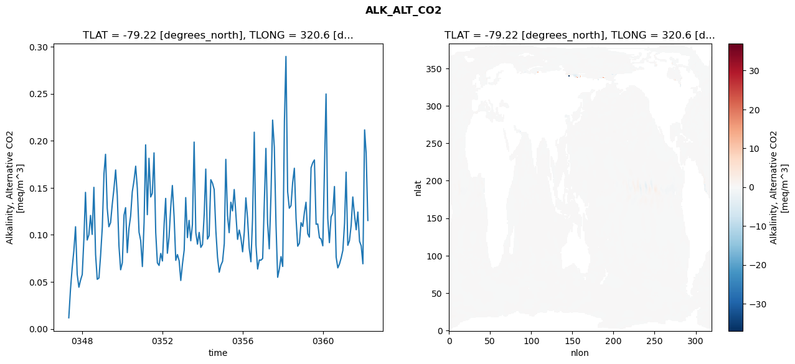
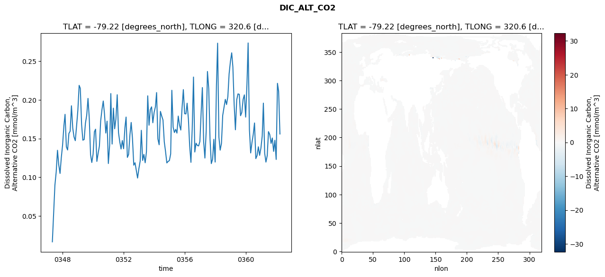
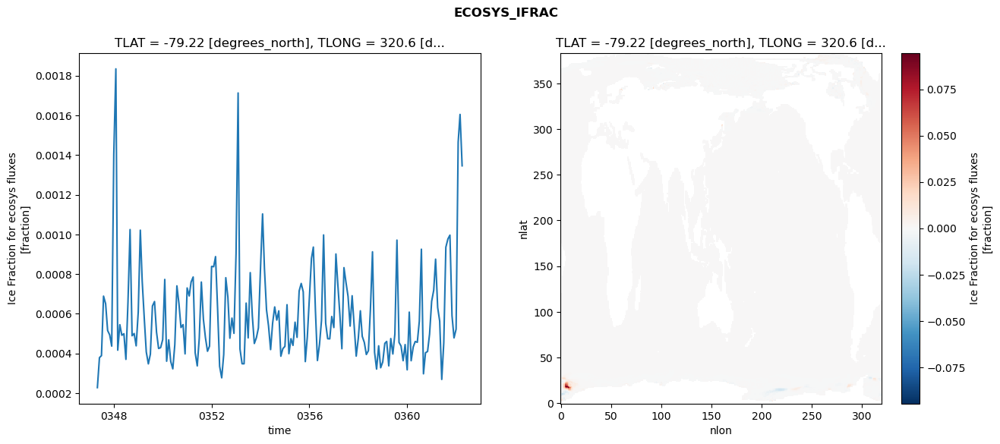
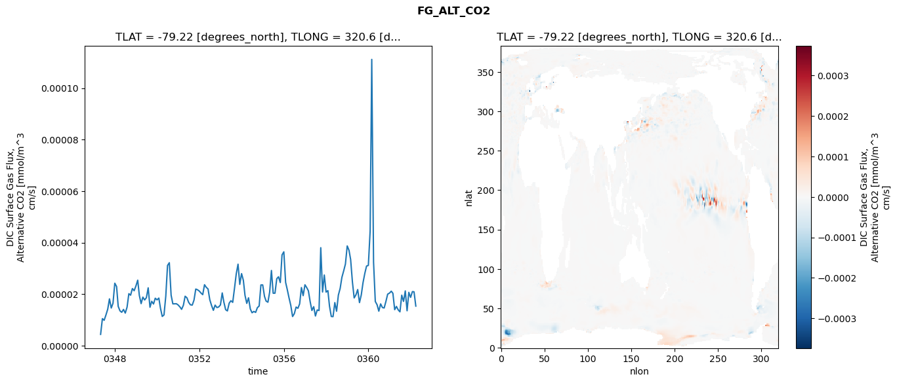

glb-dor_North_Atlantic_basin_018_1999-04-01_00073#
Simulation details#
Case: smyle.cdr-atlas-v0.glb-dor_North_Atlantic_basin_018_1999-04-01_00073.001
Basin: North_Atlantic_basin
Polygon: 18.0
Start date: 1999-04
Show code cell source Hide code cell source
import xarray as xr
import matplotlib.pyplot as plt
Show code cell source Hide code cell source
zarr_store = "/path/to/zarr/store"
# Parameters
zarr_store = "/global/cfs/projectdirs/m4746/Projects/Ocean-CDR-Atlas-v0/data/validation/smyle.cdr-atlas-v0.glb-dor_North_Atlantic_basin_018_1999-04-01_00073.001.validation.zarr"
Show code cell source Hide code cell source
%%time
ds_o = xr.open_zarr(zarr_store).compute()
ds_o
CPU times: user 630 ms, sys: 440 ms, total: 1.07 s
Wall time: 1.27 s
<xarray.Dataset> Size: 2MB
Dimensions: (nlat: 384, nlon: 320, time: 180)
Coordinates:
TLAT float64 8B -79.22
TLONG float64 8B 320.6
ULAT float64 8B -78.95
ULONG float64 8B 321.1
* time (time) object 1kB 0347-05-01 00:00:00 ... 0362-04-01 0...
z_t float32 4B 500.0
Dimensions without coordinates: nlat, nlon
Data variables:
ALK_ALT_CO2_diff (nlat, nlon) float32 492kB nan nan nan ... nan nan nan
ALK_ALT_CO2_rmse (time) float64 1kB 0.01189 0.04209 ... 0.1867 0.1153
DIC_ALT_CO2_diff (nlat, nlon) float32 492kB nan nan nan ... nan nan nan
DIC_ALT_CO2_rmse (time) float64 1kB 0.01643 0.05405 ... 0.2112 0.156
ECOSYS_IFRAC_diff (nlat, nlon) float32 492kB nan nan nan ... nan nan nan
ECOSYS_IFRAC_rmse (time) float64 1kB 0.0002277 0.0003788 ... 0.001346
FG_ALT_CO2_diff (nlat, nlon) float32 492kB nan nan nan ... nan nan nan
FG_ALT_CO2_rmse (time) float64 1kB 4.367e-06 1.047e-05 ... 1.534e-05xarray.Dataset
- nlat: 384
- nlon: 320
- time: 180
- TLAT()float64-79.22
- long_name :
- array of t-grid latitudes
- units :
- degrees_north
array(-79.22052261)
- TLONG()float64320.6
- long_name :
- array of t-grid longitudes
- units :
- degrees_east
array(320.56250892)
- ULAT()float64-78.95
- long_name :
- array of u-grid latitudes
- units :
- degrees_north
array(-78.95289509)
- ULONG()float64321.1
- long_name :
- array of u-grid longitudes
- units :
- degrees_east
array(321.12500894)
- time(time)object0347-05-01 00:00:00 ... 0362-04-...
- bounds :
- time_bound
- long_name :
- time
array([cftime.DatetimeNoLeap(347, 5, 1, 0, 0, 0, 0, has_year_zero=True), cftime.DatetimeNoLeap(347, 6, 1, 0, 0, 0, 0, has_year_zero=True), cftime.DatetimeNoLeap(347, 7, 1, 0, 0, 0, 0, has_year_zero=True), cftime.DatetimeNoLeap(347, 8, 1, 0, 0, 0, 0, has_year_zero=True), cftime.DatetimeNoLeap(347, 9, 1, 0, 0, 0, 0, has_year_zero=True), cftime.DatetimeNoLeap(347, 10, 1, 0, 0, 0, 0, has_year_zero=True), cftime.DatetimeNoLeap(347, 11, 1, 0, 0, 0, 0, has_year_zero=True), cftime.DatetimeNoLeap(347, 12, 1, 0, 0, 0, 0, has_year_zero=True), cftime.DatetimeNoLeap(348, 1, 1, 0, 0, 0, 0, has_year_zero=True), cftime.DatetimeNoLeap(348, 2, 1, 0, 0, 0, 0, has_year_zero=True), cftime.DatetimeNoLeap(348, 3, 1, 0, 0, 0, 0, has_year_zero=True), cftime.DatetimeNoLeap(348, 4, 1, 0, 0, 0, 0, has_year_zero=True), cftime.DatetimeNoLeap(348, 5, 1, 0, 0, 0, 0, has_year_zero=True), cftime.DatetimeNoLeap(348, 6, 1, 0, 0, 0, 0, has_year_zero=True), cftime.DatetimeNoLeap(348, 7, 1, 0, 0, 0, 0, has_year_zero=True), cftime.DatetimeNoLeap(348, 8, 1, 0, 0, 0, 0, has_year_zero=True), cftime.DatetimeNoLeap(348, 9, 1, 0, 0, 0, 0, has_year_zero=True), cftime.DatetimeNoLeap(348, 10, 1, 0, 0, 0, 0, has_year_zero=True), cftime.DatetimeNoLeap(348, 11, 1, 0, 0, 0, 0, has_year_zero=True), cftime.DatetimeNoLeap(348, 12, 1, 0, 0, 0, 0, has_year_zero=True), cftime.DatetimeNoLeap(349, 1, 1, 0, 0, 0, 0, has_year_zero=True), cftime.DatetimeNoLeap(349, 2, 1, 0, 0, 0, 0, has_year_zero=True), cftime.DatetimeNoLeap(349, 3, 1, 0, 0, 0, 0, has_year_zero=True), cftime.DatetimeNoLeap(349, 4, 1, 0, 0, 0, 0, has_year_zero=True), cftime.DatetimeNoLeap(349, 5, 1, 0, 0, 0, 0, has_year_zero=True), cftime.DatetimeNoLeap(349, 6, 1, 0, 0, 0, 0, has_year_zero=True), cftime.DatetimeNoLeap(349, 7, 1, 0, 0, 0, 0, has_year_zero=True), cftime.DatetimeNoLeap(349, 8, 1, 0, 0, 0, 0, has_year_zero=True), cftime.DatetimeNoLeap(349, 9, 1, 0, 0, 0, 0, has_year_zero=True), cftime.DatetimeNoLeap(349, 10, 1, 0, 0, 0, 0, has_year_zero=True), cftime.DatetimeNoLeap(349, 11, 1, 0, 0, 0, 0, has_year_zero=True), cftime.DatetimeNoLeap(349, 12, 1, 0, 0, 0, 0, has_year_zero=True), cftime.DatetimeNoLeap(350, 1, 1, 0, 0, 0, 0, has_year_zero=True), cftime.DatetimeNoLeap(350, 2, 1, 0, 0, 0, 0, has_year_zero=True), cftime.DatetimeNoLeap(350, 3, 1, 0, 0, 0, 0, has_year_zero=True), cftime.DatetimeNoLeap(350, 4, 1, 0, 0, 0, 0, has_year_zero=True), cftime.DatetimeNoLeap(350, 5, 1, 0, 0, 0, 0, has_year_zero=True), cftime.DatetimeNoLeap(350, 6, 1, 0, 0, 0, 0, has_year_zero=True), cftime.DatetimeNoLeap(350, 7, 1, 0, 0, 0, 0, has_year_zero=True), cftime.DatetimeNoLeap(350, 8, 1, 0, 0, 0, 0, has_year_zero=True), cftime.DatetimeNoLeap(350, 9, 1, 0, 0, 0, 0, has_year_zero=True), cftime.DatetimeNoLeap(350, 10, 1, 0, 0, 0, 0, has_year_zero=True), cftime.DatetimeNoLeap(350, 11, 1, 0, 0, 0, 0, has_year_zero=True), cftime.DatetimeNoLeap(350, 12, 1, 0, 0, 0, 0, has_year_zero=True), cftime.DatetimeNoLeap(351, 1, 1, 0, 0, 0, 0, has_year_zero=True), cftime.DatetimeNoLeap(351, 2, 1, 0, 0, 0, 0, has_year_zero=True), cftime.DatetimeNoLeap(351, 3, 1, 0, 0, 0, 0, has_year_zero=True), cftime.DatetimeNoLeap(351, 4, 1, 0, 0, 0, 0, has_year_zero=True), cftime.DatetimeNoLeap(351, 5, 1, 0, 0, 0, 0, has_year_zero=True), cftime.DatetimeNoLeap(351, 6, 1, 0, 0, 0, 0, has_year_zero=True), cftime.DatetimeNoLeap(351, 7, 1, 0, 0, 0, 0, has_year_zero=True), cftime.DatetimeNoLeap(351, 8, 1, 0, 0, 0, 0, has_year_zero=True), cftime.DatetimeNoLeap(351, 9, 1, 0, 0, 0, 0, has_year_zero=True), cftime.DatetimeNoLeap(351, 10, 1, 0, 0, 0, 0, has_year_zero=True), cftime.DatetimeNoLeap(351, 11, 1, 0, 0, 0, 0, has_year_zero=True), cftime.DatetimeNoLeap(351, 12, 1, 0, 0, 0, 0, has_year_zero=True), cftime.DatetimeNoLeap(352, 1, 1, 0, 0, 0, 0, has_year_zero=True), cftime.DatetimeNoLeap(352, 2, 1, 0, 0, 0, 0, has_year_zero=True), cftime.DatetimeNoLeap(352, 3, 1, 0, 0, 0, 0, has_year_zero=True), cftime.DatetimeNoLeap(352, 4, 1, 0, 0, 0, 0, has_year_zero=True), cftime.DatetimeNoLeap(352, 5, 1, 0, 0, 0, 0, has_year_zero=True), cftime.DatetimeNoLeap(352, 6, 1, 0, 0, 0, 0, has_year_zero=True), cftime.DatetimeNoLeap(352, 7, 1, 0, 0, 0, 0, has_year_zero=True), cftime.DatetimeNoLeap(352, 8, 1, 0, 0, 0, 0, has_year_zero=True), cftime.DatetimeNoLeap(352, 9, 1, 0, 0, 0, 0, has_year_zero=True), cftime.DatetimeNoLeap(352, 10, 1, 0, 0, 0, 0, has_year_zero=True), cftime.DatetimeNoLeap(352, 11, 1, 0, 0, 0, 0, has_year_zero=True), cftime.DatetimeNoLeap(352, 12, 1, 0, 0, 0, 0, has_year_zero=True), cftime.DatetimeNoLeap(353, 1, 1, 0, 0, 0, 0, has_year_zero=True), cftime.DatetimeNoLeap(353, 2, 1, 0, 0, 0, 0, has_year_zero=True), cftime.DatetimeNoLeap(353, 3, 1, 0, 0, 0, 0, has_year_zero=True), cftime.DatetimeNoLeap(353, 4, 1, 0, 0, 0, 0, has_year_zero=True), cftime.DatetimeNoLeap(353, 5, 1, 0, 0, 0, 0, has_year_zero=True), cftime.DatetimeNoLeap(353, 6, 1, 0, 0, 0, 0, has_year_zero=True), cftime.DatetimeNoLeap(353, 7, 1, 0, 0, 0, 0, has_year_zero=True), cftime.DatetimeNoLeap(353, 8, 1, 0, 0, 0, 0, has_year_zero=True), cftime.DatetimeNoLeap(353, 9, 1, 0, 0, 0, 0, has_year_zero=True), cftime.DatetimeNoLeap(353, 10, 1, 0, 0, 0, 0, has_year_zero=True), cftime.DatetimeNoLeap(353, 11, 1, 0, 0, 0, 0, has_year_zero=True), cftime.DatetimeNoLeap(353, 12, 1, 0, 0, 0, 0, has_year_zero=True), cftime.DatetimeNoLeap(354, 1, 1, 0, 0, 0, 0, has_year_zero=True), cftime.DatetimeNoLeap(354, 2, 1, 0, 0, 0, 0, has_year_zero=True), cftime.DatetimeNoLeap(354, 3, 1, 0, 0, 0, 0, has_year_zero=True), cftime.DatetimeNoLeap(354, 4, 1, 0, 0, 0, 0, has_year_zero=True), cftime.DatetimeNoLeap(354, 5, 1, 0, 0, 0, 0, has_year_zero=True), cftime.DatetimeNoLeap(354, 6, 1, 0, 0, 0, 0, has_year_zero=True), cftime.DatetimeNoLeap(354, 7, 1, 0, 0, 0, 0, has_year_zero=True), cftime.DatetimeNoLeap(354, 8, 1, 0, 0, 0, 0, has_year_zero=True), cftime.DatetimeNoLeap(354, 9, 1, 0, 0, 0, 0, has_year_zero=True), cftime.DatetimeNoLeap(354, 10, 1, 0, 0, 0, 0, has_year_zero=True), cftime.DatetimeNoLeap(354, 11, 1, 0, 0, 0, 0, has_year_zero=True), cftime.DatetimeNoLeap(354, 12, 1, 0, 0, 0, 0, has_year_zero=True), cftime.DatetimeNoLeap(355, 1, 1, 0, 0, 0, 0, has_year_zero=True), cftime.DatetimeNoLeap(355, 2, 1, 0, 0, 0, 0, has_year_zero=True), cftime.DatetimeNoLeap(355, 3, 1, 0, 0, 0, 0, has_year_zero=True), cftime.DatetimeNoLeap(355, 4, 1, 0, 0, 0, 0, has_year_zero=True), cftime.DatetimeNoLeap(355, 5, 1, 0, 0, 0, 0, has_year_zero=True), cftime.DatetimeNoLeap(355, 6, 1, 0, 0, 0, 0, has_year_zero=True), cftime.DatetimeNoLeap(355, 7, 1, 0, 0, 0, 0, has_year_zero=True), cftime.DatetimeNoLeap(355, 8, 1, 0, 0, 0, 0, has_year_zero=True), cftime.DatetimeNoLeap(355, 9, 1, 0, 0, 0, 0, has_year_zero=True), cftime.DatetimeNoLeap(355, 10, 1, 0, 0, 0, 0, has_year_zero=True), cftime.DatetimeNoLeap(355, 11, 1, 0, 0, 0, 0, has_year_zero=True), cftime.DatetimeNoLeap(355, 12, 1, 0, 0, 0, 0, has_year_zero=True), cftime.DatetimeNoLeap(356, 1, 1, 0, 0, 0, 0, has_year_zero=True), cftime.DatetimeNoLeap(356, 2, 1, 0, 0, 0, 0, has_year_zero=True), cftime.DatetimeNoLeap(356, 3, 1, 0, 0, 0, 0, has_year_zero=True), cftime.DatetimeNoLeap(356, 4, 1, 0, 0, 0, 0, has_year_zero=True), cftime.DatetimeNoLeap(356, 5, 1, 0, 0, 0, 0, has_year_zero=True), cftime.DatetimeNoLeap(356, 6, 1, 0, 0, 0, 0, has_year_zero=True), cftime.DatetimeNoLeap(356, 7, 1, 0, 0, 0, 0, has_year_zero=True), cftime.DatetimeNoLeap(356, 8, 1, 0, 0, 0, 0, has_year_zero=True), cftime.DatetimeNoLeap(356, 9, 1, 0, 0, 0, 0, has_year_zero=True), cftime.DatetimeNoLeap(356, 10, 1, 0, 0, 0, 0, has_year_zero=True), cftime.DatetimeNoLeap(356, 11, 1, 0, 0, 0, 0, has_year_zero=True), cftime.DatetimeNoLeap(356, 12, 1, 0, 0, 0, 0, has_year_zero=True), cftime.DatetimeNoLeap(357, 1, 1, 0, 0, 0, 0, has_year_zero=True), cftime.DatetimeNoLeap(357, 2, 1, 0, 0, 0, 0, has_year_zero=True), cftime.DatetimeNoLeap(357, 3, 1, 0, 0, 0, 0, has_year_zero=True), cftime.DatetimeNoLeap(357, 4, 1, 0, 0, 0, 0, has_year_zero=True), cftime.DatetimeNoLeap(357, 5, 1, 0, 0, 0, 0, has_year_zero=True), cftime.DatetimeNoLeap(357, 6, 1, 0, 0, 0, 0, has_year_zero=True), cftime.DatetimeNoLeap(357, 7, 1, 0, 0, 0, 0, has_year_zero=True), cftime.DatetimeNoLeap(357, 8, 1, 0, 0, 0, 0, has_year_zero=True), cftime.DatetimeNoLeap(357, 9, 1, 0, 0, 0, 0, has_year_zero=True), cftime.DatetimeNoLeap(357, 10, 1, 0, 0, 0, 0, has_year_zero=True), cftime.DatetimeNoLeap(357, 11, 1, 0, 0, 0, 0, has_year_zero=True), cftime.DatetimeNoLeap(357, 12, 1, 0, 0, 0, 0, has_year_zero=True), cftime.DatetimeNoLeap(358, 1, 1, 0, 0, 0, 0, has_year_zero=True), cftime.DatetimeNoLeap(358, 2, 1, 0, 0, 0, 0, has_year_zero=True), cftime.DatetimeNoLeap(358, 3, 1, 0, 0, 0, 0, has_year_zero=True), cftime.DatetimeNoLeap(358, 4, 1, 0, 0, 0, 0, has_year_zero=True), cftime.DatetimeNoLeap(358, 5, 1, 0, 0, 0, 0, has_year_zero=True), cftime.DatetimeNoLeap(358, 6, 1, 0, 0, 0, 0, has_year_zero=True), cftime.DatetimeNoLeap(358, 7, 1, 0, 0, 0, 0, has_year_zero=True), cftime.DatetimeNoLeap(358, 8, 1, 0, 0, 0, 0, has_year_zero=True), cftime.DatetimeNoLeap(358, 9, 1, 0, 0, 0, 0, has_year_zero=True), cftime.DatetimeNoLeap(358, 10, 1, 0, 0, 0, 0, has_year_zero=True), cftime.DatetimeNoLeap(358, 11, 1, 0, 0, 0, 0, has_year_zero=True), cftime.DatetimeNoLeap(358, 12, 1, 0, 0, 0, 0, has_year_zero=True), cftime.DatetimeNoLeap(359, 1, 1, 0, 0, 0, 0, has_year_zero=True), cftime.DatetimeNoLeap(359, 2, 1, 0, 0, 0, 0, has_year_zero=True), cftime.DatetimeNoLeap(359, 3, 1, 0, 0, 0, 0, has_year_zero=True), cftime.DatetimeNoLeap(359, 4, 1, 0, 0, 0, 0, has_year_zero=True), cftime.DatetimeNoLeap(359, 5, 1, 0, 0, 0, 0, has_year_zero=True), cftime.DatetimeNoLeap(359, 6, 1, 0, 0, 0, 0, has_year_zero=True), cftime.DatetimeNoLeap(359, 7, 1, 0, 0, 0, 0, has_year_zero=True), cftime.DatetimeNoLeap(359, 8, 1, 0, 0, 0, 0, has_year_zero=True), cftime.DatetimeNoLeap(359, 9, 1, 0, 0, 0, 0, has_year_zero=True), cftime.DatetimeNoLeap(359, 10, 1, 0, 0, 0, 0, has_year_zero=True), cftime.DatetimeNoLeap(359, 11, 1, 0, 0, 0, 0, has_year_zero=True), cftime.DatetimeNoLeap(359, 12, 1, 0, 0, 0, 0, has_year_zero=True), cftime.DatetimeNoLeap(360, 1, 1, 0, 0, 0, 0, has_year_zero=True), cftime.DatetimeNoLeap(360, 2, 1, 0, 0, 0, 0, has_year_zero=True), cftime.DatetimeNoLeap(360, 3, 1, 0, 0, 0, 0, has_year_zero=True), cftime.DatetimeNoLeap(360, 4, 1, 0, 0, 0, 0, has_year_zero=True), cftime.DatetimeNoLeap(360, 5, 1, 0, 0, 0, 0, has_year_zero=True), cftime.DatetimeNoLeap(360, 6, 1, 0, 0, 0, 0, has_year_zero=True), cftime.DatetimeNoLeap(360, 7, 1, 0, 0, 0, 0, has_year_zero=True), cftime.DatetimeNoLeap(360, 8, 1, 0, 0, 0, 0, has_year_zero=True), cftime.DatetimeNoLeap(360, 9, 1, 0, 0, 0, 0, has_year_zero=True), cftime.DatetimeNoLeap(360, 10, 1, 0, 0, 0, 0, has_year_zero=True), cftime.DatetimeNoLeap(360, 11, 1, 0, 0, 0, 0, has_year_zero=True), cftime.DatetimeNoLeap(360, 12, 1, 0, 0, 0, 0, has_year_zero=True), cftime.DatetimeNoLeap(361, 1, 1, 0, 0, 0, 0, has_year_zero=True), cftime.DatetimeNoLeap(361, 2, 1, 0, 0, 0, 0, has_year_zero=True), cftime.DatetimeNoLeap(361, 3, 1, 0, 0, 0, 0, has_year_zero=True), cftime.DatetimeNoLeap(361, 4, 1, 0, 0, 0, 0, has_year_zero=True), cftime.DatetimeNoLeap(361, 5, 1, 0, 0, 0, 0, has_year_zero=True), cftime.DatetimeNoLeap(361, 6, 1, 0, 0, 0, 0, has_year_zero=True), cftime.DatetimeNoLeap(361, 7, 1, 0, 0, 0, 0, has_year_zero=True), cftime.DatetimeNoLeap(361, 8, 1, 0, 0, 0, 0, has_year_zero=True), cftime.DatetimeNoLeap(361, 9, 1, 0, 0, 0, 0, has_year_zero=True), cftime.DatetimeNoLeap(361, 10, 1, 0, 0, 0, 0, has_year_zero=True), cftime.DatetimeNoLeap(361, 11, 1, 0, 0, 0, 0, has_year_zero=True), cftime.DatetimeNoLeap(361, 12, 1, 0, 0, 0, 0, has_year_zero=True), cftime.DatetimeNoLeap(362, 1, 1, 0, 0, 0, 0, has_year_zero=True), cftime.DatetimeNoLeap(362, 2, 1, 0, 0, 0, 0, has_year_zero=True), cftime.DatetimeNoLeap(362, 3, 1, 0, 0, 0, 0, has_year_zero=True), cftime.DatetimeNoLeap(362, 4, 1, 0, 0, 0, 0, has_year_zero=True)], dtype=object) - z_t()float32500.0
- long_name :
- depth from surface to midpoint of layer
- positive :
- down
- units :
- centimeters
- valid_max :
- 537500.0
- valid_min :
- 500.0
array(500., dtype=float32)
- ALK_ALT_CO2_diff(nlat, nlon)float32nan nan nan nan ... nan nan nan nan
- cell_methods :
- time: mean
- grid_loc :
- 3111
- long_name :
- Alkalinity, Alternative CO2
- units :
- meq/m^3
array([[ nan, nan, nan, ..., nan, nan, nan], [ nan, nan, nan, ..., nan, nan, nan], [0.02368164, 0.01806641, 0.04345703, ..., nan, nan, nan], ..., [ nan, nan, nan, ..., nan, nan, nan], [ nan, nan, nan, ..., nan, nan, nan], [ nan, nan, nan, ..., nan, nan, nan]], dtype=float32) - ALK_ALT_CO2_rmse(time)float640.01189 0.04209 ... 0.1867 0.1153
- cell_methods :
- time: mean
- grid_loc :
- 3111
- long_name :
- Alkalinity, Alternative CO2
- units :
- meq/m^3
array([0.01188507, 0.04209284, 0.06457764, 0.08299763, 0.10863977, 0.05806345, 0.0443686 , 0.05181878, 0.05788761, 0.09696548, 0.14516618, 0.09451773, 0.09985184, 0.12065836, 0.10049406, 0.15051195, 0.07904266, 0.05277834, 0.0541446 , 0.07806213, 0.10798382, 0.16523536, 0.18560824, 0.12834725, 0.1086243 , 0.11299162, 0.13218066, 0.14907295, 0.1689705 , 0.14176493, 0.08789563, 0.06291677, 0.07039667, 0.12105467, 0.12890497, 0.08114966, 0.10659903, 0.12007347, 0.14577304, 0.15754041, 0.17297505, 0.14927191, 0.10279949, 0.0939965 , 0.06632343, 0.11340469, 0.19565712, 0.121464 , 0.18135364, 0.14026308, 0.14424427, 0.18714001, 0.10236125, 0.07022352, 0.06750908, 0.08024681, 0.07227224, 0.1115388 , 0.13876839, 0.08050803, 0.09736542, 0.1293374 , 0.1524567 , 0.11968389, 0.07293953, 0.07908332, 0.07261644, 0.05154273, 0.06921016, 0.08384722, 0.13959878, 0.09709909, 0.11539283, 0.09373909, 0.11096886, 0.19860728, 0.10232201, 0.09010291, 0.10259041, 0.08669422, 0.08978328, 0.12241675, 0.16991881, 0.09553366, 0.09898606, 0.15860705, 0.15501313, 0.14824456, 0.10423727, 0.07625967, 0.0602763 , 0.0676919 , 0.07178321, 0.09081927, 0.18025771, 0.12046561, 0.10234567, 0.1346861 , 0.12553135, 0.14818812, 0.12179394, 0.09525328, 0.10518043, 0.09663343, 0.08201717, 0.10335549, 0.1393251 , 0.11780462, 0.08596967, 0.07143235, 0.11736103, 0.20912496, 0.0893739 , 0.06371678, 0.07332178, 0.07311298, 0.07486288, 0.13700118, 0.1919 , 0.11220715, 0.08519211, 0.14194046, 0.22197011, 0.19322769, 0.11035599, 0.05490605, 0.06378951, 0.07685611, 0.06643642, 0.2209202 , 0.28960394, 0.14572039, 0.12831011, 0.13112711, 0.15574403, 0.17079871, 0.11733013, 0.08795808, 0.09116587, 0.11295688, 0.10889364, 0.12446396, 0.13465311, 0.10131549, 0.09763094, 0.1712855 , 0.17656264, 0.17961825, 0.11123207, 0.11158468, 0.09684953, 0.09563192, 0.08835369, 0.17148697, 0.24969499, 0.11758675, 0.09174164, 0.11917414, 0.12304205, 0.15138692, 0.07629411, 0.06492555, 0.06912602, 0.07535988, 0.08353745, 0.11243736, 0.16667568, 0.08887737, 0.09380215, 0.11004779, 0.14028841, 0.12097535, 0.10544025, 0.12426372, 0.09313553, 0.0883613 , 0.06927316, 0.21155589, 0.1867468 , 0.11528502]) - DIC_ALT_CO2_diff(nlat, nlon)float32nan nan nan nan ... nan nan nan nan
- cell_methods :
- time: mean
- grid_loc :
- 3111
- long_name :
- Dissolved Inorganic Carbon, Alternative CO2
- units :
- mmol/m^3
array([[ nan, nan, nan, ..., nan, nan, nan], [ nan, nan, nan, ..., nan, nan, nan], [-0.00292969, -0.00170898, 0.03662109, ..., nan, nan, nan], ..., [ nan, nan, nan, ..., nan, nan, nan], [ nan, nan, nan, ..., nan, nan, nan], [ nan, nan, nan, ..., nan, nan, nan]], dtype=float32) - DIC_ALT_CO2_rmse(time)float640.01643 0.05405 ... 0.2112 0.156
- cell_methods :
- time: mean
- grid_loc :
- 3111
- long_name :
- Dissolved Inorganic Carbon, Alternative CO2
- units :
- mmol/m^3
array([0.01642801, 0.05405315, 0.08953569, 0.10673934, 0.13487891, 0.11607687, 0.10491041, 0.12526064, 0.14175092, 0.16631803, 0.18138762, 0.13930442, 0.13526968, 0.15666874, 0.15960821, 0.19245928, 0.16356977, 0.15221094, 0.14730635, 0.16589546, 0.18633471, 0.21887266, 0.21496797, 0.16799342, 0.14795459, 0.14880333, 0.16971432, 0.18008996, 0.20198316, 0.17661351, 0.12911437, 0.11908648, 0.12999055, 0.15879719, 0.16216977, 0.12048364, 0.13071875, 0.14048742, 0.17278882, 0.18750476, 0.19860304, 0.18150245, 0.1571836 , 0.17259012, 0.1177435 , 0.14167694, 0.20826503, 0.14293105, 0.18937247, 0.16268531, 0.17548321, 0.20672845, 0.15756002, 0.14578033, 0.13655449, 0.14747601, 0.13689651, 0.1640228 , 0.17784075, 0.1256656 , 0.12956948, 0.15491324, 0.17087142, 0.1500735 , 0.11559387, 0.11876909, 0.10861537, 0.09897233, 0.11103683, 0.12086936, 0.16071033, 0.12177526, 0.12954994, 0.11872671, 0.1327432 , 0.2053437 , 0.16728671, 0.18747692, 0.19108832, 0.17047736, 0.18399457, 0.1911984 , 0.20954265, 0.14960855, 0.14202163, 0.1851541 , 0.17929989, 0.17407064, 0.14577133, 0.13340551, 0.11851741, 0.12043181, 0.12154121, 0.13016913, 0.21250306, 0.16487149, 0.15784596, 0.16191759, 0.1571185 , 0.17911958, 0.16724895, 0.16107345, 0.19036141, 0.21336473, 0.18219908, 0.18193767, 0.195787 , 0.17541602, 0.14068233, 0.11926253, 0.16230928, 0.22962573, 0.13264601, 0.14399881, 0.14109339, 0.14050028, 0.14627647, 0.18505905, 0.21601539, 0.14610241, 0.12482592, 0.16014665, 0.23684388, 0.21441953, 0.14890363, 0.11765419, 0.12334501, 0.14907949, 0.11962013, 0.21922203, 0.27345759, 0.15185711, 0.13508664, 0.14383452, 0.1800242 , 0.19053792, 0.20076058, 0.19404618, 0.20427635, 0.23373084, 0.24963031, 0.26096619, 0.24285553, 0.19386861, 0.16141259, 0.20009815, 0.20781563, 0.20730758, 0.17961367, 0.18380614, 0.20070464, 0.20655188, 0.17782911, 0.22023386, 0.27373185, 0.16158998, 0.13142702, 0.14494626, 0.15525403, 0.17022224, 0.12408709, 0.12801646, 0.13937214, 0.12837216, 0.13767713, 0.15332273, 0.19590218, 0.13111593, 0.11960455, 0.12796636, 0.15900173, 0.155201 , 0.14377777, 0.15074844, 0.1334385 , 0.14777963, 0.12300282, 0.22150389, 0.21118306, 0.15596032]) - ECOSYS_IFRAC_diff(nlat, nlon)float32nan nan nan nan ... nan nan nan nan
- cell_methods :
- time: mean
- grid_loc :
- 2110
- long_name :
- Ice Fraction for ecosys fluxes
- units :
- fraction
array([[ nan, nan, nan, ..., nan, nan, nan], [ nan, nan, nan, ..., nan, nan, nan], [-0.00129163, -0.00283062, -0.00266933, ..., nan, nan, nan], ..., [ nan, nan, nan, ..., nan, nan, nan], [ nan, nan, nan, ..., nan, nan, nan], [ nan, nan, nan, ..., nan, nan, nan]], dtype=float32) - ECOSYS_IFRAC_rmse(time)float640.0002277 0.0003788 ... 0.001346
- cell_methods :
- time: mean
- grid_loc :
- 2110
- long_name :
- Ice Fraction for ecosys fluxes
- units :
- fraction
array([0.00022774, 0.00037875, 0.00038892, 0.00068873, 0.00065072, 0.0005156 , 0.00049333, 0.00043692, 0.00140258, 0.0018342 , 0.00041647, 0.00054491, 0.00049172, 0.00049931, 0.00037022, 0.00066083, 0.00102427, 0.00048917, 0.00050043, 0.00043836, 0.00060889, 0.00102121, 0.00076526, 0.00057693, 0.00040754, 0.00034734, 0.00039608, 0.00063919, 0.00066165, 0.00050716, 0.00042506, 0.00042918, 0.00046953, 0.00077294, 0.00036077, 0.00046865, 0.00035967, 0.00032229, 0.00044456, 0.00074054, 0.00065 , 0.00053074, 0.00054536, 0.00039785, 0.00072995, 0.0006897 , 0.00075977, 0.0007853 , 0.00040332, 0.00033733, 0.00047692, 0.00075979, 0.00057116, 0.00047972, 0.00041097, 0.00043653, 0.00083859, 0.00083708, 0.00088799, 0.0006226 , 0.00033509, 0.00027719, 0.00039433, 0.0007817 , 0.00068404, 0.00047676, 0.000578 , 0.00050124, 0.00090204, 0.00171275, 0.000422 , 0.0003481 , 0.0003479 , 0.00065363, 0.00047848, 0.00080726, 0.00058993, 0.00045012, 0.00047952, 0.0005286 , 0.00082774, 0.0011031 , 0.00082735, 0.00061966, 0.00053863, 0.00041945, 0.00055273, 0.00063433, 0.000568 , 0.00061459, 0.00038607, 0.00042419, 0.00043579, 0.0006456 , 0.00039884, 0.00047443, 0.00044056, 0.00055751, 0.00048108, 0.00071486, 0.00075283, 0.00071055, 0.00035893, 0.00048343, 0.00068418, 0.000879 , 0.00093594, 0.0006172 , 0.00036432, 0.00044631, 0.00056715, 0.00099723, 0.00055286, 0.00047417, 0.00047349, 0.00058617, 0.00053064, 0.00090122, 0.00075035, 0.00059508, 0.00042382, 0.00083231, 0.00075863, 0.00068777, 0.00053786, 0.00069074, 0.00053594, 0.00038651, 0.00047579, 0.00061488, 0.00048609, 0.00045554, 0.00039467, 0.00041388, 0.00062252, 0.00091213, 0.00040565, 0.0003212 , 0.0004384 , 0.00032783, 0.0003571 , 0.00045084, 0.00046055, 0.00033754, 0.00047502, 0.00039725, 0.00049753, 0.00097111, 0.00045543, 0.00043761, 0.00036355, 0.00044467, 0.00031742, 0.00060822, 0.00036332, 0.00043288, 0.00046023, 0.00045606, 0.00056238, 0.00092524, 0.00029742, 0.00040336, 0.00041002, 0.00049747, 0.00066282, 0.00071857, 0.00087511, 0.0006312 , 0.0005632 , 0.00026915, 0.00045317, 0.00093528, 0.00097721, 0.00099625, 0.00059038, 0.00047851, 0.00052224, 0.00146481, 0.00160456, 0.00134563]) - FG_ALT_CO2_diff(nlat, nlon)float32nan nan nan nan ... nan nan nan nan
- cell_methods :
- time: mean
- grid_loc :
- 2110
- long_name :
- DIC Surface Gas Flux, Alternative CO2
- units :
- mmol/m^3 cm/s
array([[ nan, nan, nan, ..., nan, nan, nan], [ nan, nan, nan, ..., nan, nan, nan], [8.3829509e-06, 1.3206241e-05, 1.4752819e-05, ..., nan, nan, nan], ..., [ nan, nan, nan, ..., nan, nan, nan], [ nan, nan, nan, ..., nan, nan, nan], [ nan, nan, nan, ..., nan, nan, nan]], dtype=float32) - FG_ALT_CO2_rmse(time)float644.367e-06 1.047e-05 ... 1.534e-05
- cell_methods :
- time: mean
- grid_loc :
- 2110
- long_name :
- DIC Surface Gas Flux, Alternative CO2
- units :
- mmol/m^3 cm/s
array([4.36652808e-06, 1.04728084e-05, 9.83361040e-06, 1.18846852e-05, 1.41536778e-05, 1.81595094e-05, 1.45909930e-05, 1.64531673e-05, 2.42363288e-05, 2.29339953e-05, 1.52398883e-05, 1.34894317e-05, 1.29446543e-05, 1.40524819e-05, 1.26317534e-05, 1.49292757e-05, 2.01684621e-05, 1.95862591e-05, 2.21584784e-05, 2.13133449e-05, 2.31568941e-05, 2.54123029e-05, 1.95033994e-05, 1.63055368e-05, 1.88318056e-05, 1.77297621e-05, 1.86204991e-05, 2.24394165e-05, 1.48980321e-05, 1.72163087e-05, 1.61591648e-05, 1.84005337e-05, 1.77622069e-05, 1.84573303e-05, 1.45208681e-05, 1.13289710e-05, 1.19213512e-05, 1.92176318e-05, 3.11204958e-05, 3.21944105e-05, 1.95778394e-05, 1.62102173e-05, 1.62295083e-05, 1.62661682e-05, 1.57716227e-05, 1.49927400e-05, 1.40920816e-05, 1.56813582e-05, 1.91710752e-05, 1.85688881e-05, 1.67916169e-05, 1.58445518e-05, 1.57369484e-05, 1.76500824e-05, 2.19691807e-05, 2.16816172e-05, 2.11782755e-05, 2.03673117e-05, 1.97907739e-05, 2.36485049e-05, 2.26412662e-05, 2.19863794e-05, 1.78259379e-05, 1.55531941e-05, 1.37004756e-05, 1.57242917e-05, 1.47833088e-05, 1.49986116e-05, 1.57976709e-05, 2.04513093e-05, 1.69030398e-05, 1.39587101e-05, 1.34788555e-05, 1.64774018e-05, 1.74324774e-05, 1.68006728e-05, 2.22862398e-05, 2.78308908e-05, 3.16206905e-05, 2.37752886e-05, ... 2.59735343e-05, 2.67261337e-05, 2.44916147e-05, 3.52273050e-05, 3.64271219e-05, 2.45602041e-05, 2.18142004e-05, 1.85188932e-05, 1.56333813e-05, 1.12949911e-05, 1.23808081e-05, 1.49666904e-05, 1.44848378e-05, 1.61986602e-05, 2.25463607e-05, 1.93974552e-05, 2.36200454e-05, 2.25056370e-05, 2.12887460e-05, 1.70517641e-05, 1.36386958e-05, 1.51203906e-05, 1.14998233e-05, 1.38501451e-05, 1.36193443e-05, 3.80229876e-05, 2.08226311e-05, 2.74123556e-05, 2.07829433e-05, 2.13536929e-05, 1.53158828e-05, 1.13159084e-05, 1.12583400e-05, 1.67054703e-05, 1.33511113e-05, 1.96031269e-05, 2.22239276e-05, 2.65054226e-05, 2.90292283e-05, 3.16812766e-05, 3.87175124e-05, 3.70050262e-05, 3.34515187e-05, 2.46921931e-05, 1.85236542e-05, 1.97298750e-05, 2.17742256e-05, 1.66962449e-05, 1.97245508e-05, 2.44480265e-05, 2.80490201e-05, 3.08917760e-05, 3.11544454e-05, 4.45466429e-05, 1.11148471e-04, 3.23726419e-05, 1.71460299e-05, 1.58603393e-05, 1.33750362e-05, 1.62013420e-05, 1.47922818e-05, 1.46064871e-05, 1.72019003e-05, 1.99959201e-05, 2.03841264e-05, 2.11449479e-05, 2.03040983e-05, 1.39633115e-05, 1.52164218e-05, 1.38745530e-05, 1.31194353e-05, 1.95839217e-05, 1.71647867e-05, 2.12373211e-05, 1.35362932e-05, 2.06870037e-05, 1.87400376e-05, 2.09742550e-05, 2.08896543e-05, 1.53421514e-05])
- timePandasIndex
PandasIndex(CFTimeIndex([0347-05-01 00:00:00, 0347-06-01 00:00:00, 0347-07-01 00:00:00, 0347-08-01 00:00:00, 0347-09-01 00:00:00, 0347-10-01 00:00:00, 0347-11-01 00:00:00, 0347-12-01 00:00:00, 0348-01-01 00:00:00, 0348-02-01 00:00:00, ... 0361-07-01 00:00:00, 0361-08-01 00:00:00, 0361-09-01 00:00:00, 0361-10-01 00:00:00, 0361-11-01 00:00:00, 0361-12-01 00:00:00, 0362-01-01 00:00:00, 0362-02-01 00:00:00, 0362-03-01 00:00:00, 0362-04-01 00:00:00], dtype='object', length=180, calendar='noleap', freq='MS'))
Show code cell source Hide code cell source
variables = [v[:-5] for v in ds_o.variables if "_rmse" in v]
Show code cell source Hide code cell source
plt.rcParams.update({'figure.max_open_warning': 0})
for v in variables:
fig, axs = plt.subplots(1, 2, figsize=(15, 6))
ds_o[f"{v}_rmse"].plot(ax=axs[0])
ds_o[f"{v}_diff"].plot(ax=axs[1])
plt.suptitle(v, fontweight="bold")



